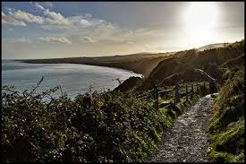

The Dingle Way (Irish: Slí Chorca Dhuibhne) is a long-distance trail around the Dingle Peninsula in County Kerry, Ireland. It is a 162-kilometre (101-mile) long circular route that begins and ends in Tralee and is typically completed in eight days. It is designated as a National Waymarked Trail by the National Trails Office of the Irish Sports Council and is managed by the Dingle Way Committee and Kerry County Council.
The Dingle Way (Irish: Slí Chorca Dhuibhne)[3] is a long-distance trail around the Dingle Peninsula in County Kerry, Ireland. It is a 162-kilometre (101-mile) long circular route that begins and ends in Tralee and is typically completed in eight days.[4] It is designated as a National Waymarked Trail by the National Trails Office of the Irish Sports Council and is managed by the Dingle Way Committee and Kerry County Council.
Cliffs of Moher Coastal Walk
- Location: Killarney, Co. Kerry
- Height:
- Difficulty Level
- Average Time
- Climate
- Transportation: Click here for directions
The Cliffs of Moher (/ˈm oːhɚ/; Irish: Aillte an Mhothair)[1] are located at the southwestern edge of the Burren region in County Clare, Ireland.[2][3] They rise 120 metres (390 ft) above the Atlantic Ocean at Hag's Head, and, eight kilometres to the north, reach their maximum height of 214 metres (702 ft) just north of O'Brien's Tower,[4] which is a round stone tower near the midpoint of the cliffs that was built in 1835 by Sir Cornelius O'Brien.[2][5] From the cliffs, and from atop the tower, visitors can see the Aran Islands in Galway Bay, the Maumturks and Twelve Pins mountain ranges to the north in County Galway, and Loop Head to the south.[5] The cliffs rank amongst the most visited tourist sites in Ireland[6] and receive approximately one million visitors a year.[7] The closest settlements are Liscannor (6 km south) and Doolin (7 km north).
Ulster
Slieve League
- Location: Co. Donegal (Wild Atlantic Way)
- Height: 609 metres
- Difficulty Level: Strenuous
- Climate: Marine cliffs, Mountain
- Transportation: Click here to get directions for your preferred mode of transport
Standing on top of the magnificent Slieve League cliffs, it feels like you're at the very edge of the world. Hiking towards the summit is rather strenuous but definitely worth it. On a clear day you can see right across to Sligo and Leitrim and all the way to the mountains of the Mayo coast. To reach the highest point of Slieve League, you must take a norrow pathway to One Man's Pass, which is exhilirating and somewhat scary, and only recommended for experienced hikers.
Causeway Coast Way
- Location: North Coast, Co. Antrim
- Distance: 53km
- Difficulty Level: Moderate
- Climate: Beach, coastal, hill
- Transportation: Click here to get directions for your preferred mode of transport
This superb, two-day walking route takes you along Northern Ireland's most celebrated coastline. High cliffs, secluded beaches and numerous historic and natural landmarks such as the famous Giant's Causeway are just some of the treats on offer. With frequent access points and terrain suitable for all fit walkers, this is one route you'll remember for years to come.
Rocky Mountain
- Location: Mourne Mountains, Co. Down
- Distance: 7km
- Difficulty Level: Easy
- Climate: Mountain, forest
- Transportation: Click here to get directions for your preferred mode of transport
For the most part it is easy walking with spectacular views over the coastal plain and the contrasting landscapes of the Allalong Valley. Everywhere stone walls enclosing small fields are a picturesque feature of Mourne farmland.
Leinster
Bray Head Cliff Walk
- Location: Bray (co. Wicklow)
- Height: 130 metres
- Difficulty Level: Easy
- Climate: Cliffs, seaside
- Transport: Return transport is available along the DART line.
Click here for directions

One of the highlights of walking in Wicklow. This linear walk takes you from Bray to Greystones along the stunning coastal path. The path is well maintained and you can return by light rail (DART) to the start point. Greystones has plenty to offer the hungry walker after beautiful views and a range of marine wildlife. From Bray start, there is a path leading to the top of Bray Head offering stunning views of the Irish Sea, The Wicklow Mountains and Bray.
Lugnaquilla Mountain Trial
- Location: Knockanarrigan (co. Wicklow)
- Height: 925 metres
- Difficulty Level: Difficult
- Climate: Mountain
- Transport: Click here for directions
Standing at 925m Lugnaquilla or Lug as it’s better known, is the highest mountain in Ireland outside of Kerry. It’s important to note that if you intend climbing ‘Lug’ you should be fully prepared: know what equipment to carry and know how to use. A major difficulty with climbing the mountain is the summit plateau, this area is very difficult to navigate in poor weather and is a regular cause of walkers getting lost on the mountain. The plateau is also guarded by two areas of cliffs to the North and South.
Howth - Bog of Frogs loop
- Location: Howth (Co. Dublin)
- Height: 240 metres
- Difficulty Level: Moderate
- Climate: Cliffs
- Transport: DART and bus to Howth from Dublin.
Click here for directions
Starting at the DART (train) station in Howth village and following purple arrows this walk takes the path all along the cliffs to beyond Red Rock, passing the Baily Lighthouse, and then climbing to circle the Ben of Howth to return along the old tramline. The views of Lambay Island and Ireland’s Eye as well as Dublin Bay are spectacular. The cliffs are great for birds and grey seals may also be seen.
Connaught
Woodland Faerie Trail
- Location: Achill Island
- Height: 609 metres
- Difficulty Level: Easy
- Climate: Depends on the season
- Transportation: Click here for directions
This is the trail to appreciate the fairies in Ireland. A nice magical walk for the whole family. The Valley House, Achill has opened a new woodland Faerie Trail. Come explore this beautiful woodland walk with Irish folk tales, faerie villages, faerie rings, leprechauns and much more. The Faerie Trail is open from 10am until dark (Open All Year, 7 Days a Week!) and costs €2 per person.
Clifden Trail
- Location: North Coast, Co. Antrim
- Distance: 53km
- Difficulty Level: Moderate
- Climate: Beach, coastal, hill
- Transportation: Click here for directions
This superb, two-day walking route takes you along Northern Ireland's most celebrated coastline. High cliffs, secluded beaches and numerous historic and natural landmarks such as the famous Giant's Causeway are just some of the treats on offer. With frequent access points and terrain suitable for all fit walkers, this is one route you'll remember for years to come.